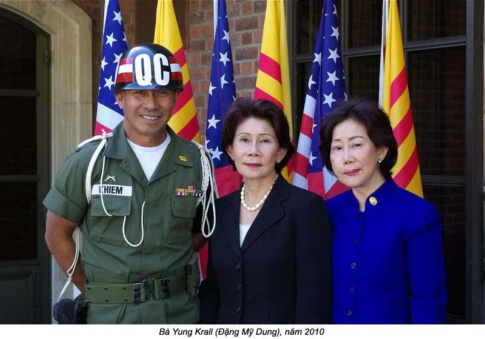

Chương 5

au khi bị công an bắt giam, má tôi quyết định rời khỏi Cần Thơ. Gia đình tôi phải đến một nơi mà không ai biết dĩ vãng của chúng tôi, để không bị quấy nhiễu nữa. Má tôi năn nỉ ông ngoại đừng buồn vì sự ra đi này. Má tôi biết ông bà ngoại không bao giờ muốn con cháu xa Cần Thơ. Nhưng má tôi cũng biết ông bà không thể bảo vệ chúng tôi được. Ông ngoại, bà ngoại tôi buồn lắm, đành chấp nhận sự xa cách. Ông thở dài dặn má tôi:
“Con đi đâu thì đi, miễn là chỗ tử tế, bình yên cho sắp nhỏ tiếp tục học hành là cậu mừng”.
Muốn không ai biết lý lịch của mình, chúng tôi phải đến chỗ đông người. Chỗ ấy, ngoài Sài gòn ra, không còn nơi nào khác nữa. Sài gòn cách Bang Thạch cả 375 cây số, đủ xa để không còn bị công an phe quốc gia dòm ngó, mà bọn cán bộ Việt Cộng nằm vùng không thể uy hiếp bắt ủng hộ hay đóng góp nữa, hy vọng là được tạm yên.

Từ ngày đó, má tôi phải làm việc nhiều hơn để có dư tiền trong thời gian đầu ở nơi đất lạ. Theo sự tính toán của má, một người trong gia đình tôi phải đi Sài gòn để gặp người lo chuyện nơi ăn chốn ở. Hai chị Kim, Cương mắc đi học, khi về nhà con phải giữ em cho má làm việc. Tôi mới học lớp năm ở trường làng. Thầy giáo Dần là bạn học của má, nên ông thông cảm cho sự vắng mặt của tôi, nghĩa là tôi sẽ không bị thầy cho “hột vịt”. Tôi trở thành một giao liên tý hon, với nhiệm vụ lên Sài gòn trước để gặp người bạn cũ của ba má tôi là có Ba. Tôi tin không một ai trong nhà lại có thể nghĩ rằng má tôi đã giao cho trách nhiệm nặng nề này. Suốt tuổi ấu thơ, tôi chỉ quen sống trong vùng giải phóng rèng nú, quê mùa. Gần đây mới được đến chốn thành thị, còn bỡ ngỡ, chân chưa hết phèn, mà dám đi Sài gòn một mình. Trong lòng, tôi vừa sợ vừa mừng. Sợ, vì tôi thường nghe nói Sài gòn là nơi đô hội, nhiều cạm bẫy, lừa lọc, mà tôi chỉ là một đứa con nít nhà quê. Mừng, vì sắp được đi Sài gòn coi nó ra làm sao. Trước đó, ông ngoại có dậu qua câu “Đi một ngày đàng, học một sàng khôn”. Chị Yvonne hay chị Thảo vẫn chưa đặt chân lên Sài gòn, chưa mạo hiểm như tôi, một đứa vai em.
Cho đến nay, tôi vẫn chưa quên được cuộc phiêu lưu của đứa bé nhà quê lên tỉnh, đi tới một thành phố lớn nhứt nước, đi tới “Hòn ngọc Viễn Đông”. Má và bà ngoại cho tiền bỏ túi, nên tha hồ ăn hàng suốt từ Cần Thơ tới Sài gòn! Từ Bắc Cần Thcr, Bắc Mỹ Thuận, ở bến xe Vĩnh Long, bến xe Taâ An, rồi cầu Bến Lức, nơi nào tôi cũng thưởng thức món ăn đặc biệt của nơi đó, và tôi không hiểu làm sao cái bụng nhỏ bé của một đứa con nít mới mười tuổi mà chưa được nhiều như vậy. Nào là bánh phộng khoai, bánh lá dừa, chuối nếp nướng; nào là mía, ổi, mận, trái cóc, khóm, rồi cả na muối, me ngào, v.v… ăn món nào tôi cũng ước nó có em tôi cùng ăn với mình. Khi xe đến Phú Lâm thì không còn hàng quán nữa, tôi giải trí bằng cách coi bảng quảng cáo hai bên đường, vừa hay vừa lạ. Chẳng hạn, người ta quảng cáo thuốc đánh răng Hynos bằng hình ảnh một người đen thui, nhe hai hàm răng trắng bóc ra cười. Sự tương phản của mầu sắc đã tăng giá trị của món hàng được quảng cáo. Dầu cù là Mac Phsu trị bá chứng cạnh tranh với dầu Khuynh Diệp bác sĩ Tín. Dầu nào cũng khoe mình hay, mình tốt nhứt. Lại có một tấm bảng quảng cáo thuốc lá với câu “Người sành điệu, hút thuốc Mélia”. Tôi nghĩ ngay tới ông ngoại và cười thầm, vì ông tôi chỉ hút thuốc rê, như vậy là ông không “sành điệu” rồi! Mà cần gì sành điệu ông cứ hiền từ, yêu thương, đùm bọc con cháu là chúng tôi vui rồi. Với ý nghĩ đó, tôi cười một mình.
Má tôi không có địa chỉ của cô Ba, chỉ biết địa chỉ của cô Mỹ Ngọc, chủ trường nữ công Mỹ Ngọc. Cô Mỹ Ngọc là bạn thân, cũng là những người trong đại gia đình Việt Minh trước kia. Má tin rằng tôi gặp được cô Mỹ Ngọc là sẽ gặp được cô Ba.
Khi bước ra khỏi xe ở bến xe đò Sài gòn, tôi vừa hoang mang, vừa sợ sệt. Trước đôi mắt nhỏ bé của đứa con nít như tôi, bến xe đò Sài gòn sao mà rộng mênh mông. Bến xe Cần Thơ, đối với tôi là rất lớn, vậy mà so với bến xe Sài gòn thì thua xa, tiếng động chung quanh cũng làm tôi náo nức. Tiếng rao hàng, tiếng nổ của những máy xe, tiếng chào mời khách của các anh lơ… cũng khác lạ với tiếng ồn ào của bến xe Cần Thơ. Mùi xăng nồng nặc trộn với mùi rác rến bị đốt, cũng làm tôi có cảm giác xa lạ. Cần Thơ có xe lôi, Sài gòn thì có xích lô đạp. Chỉ nhìn mấy bác lái xe xích lô máy chạy vun vút trên đường, tôi cũng đã thấy sợ rồi. Tôi nghĩ rằng mấy người ngồi xích lô máy phải gan lì lắm, vì với tốc độ ấy, xích lô máy có thể đâm bổ vô xe taxi chạy trước bất kỳ lúc nào.
Tôi cẩn thận đưa tay nắn túi để biết chắc lá thơ má tôi viết cho cô Ba còn nằm yên trong đó, rồi kêu một chiếc xích lô đạp để tới trường nữ công Mỹ Ngọc ở đường Trần Hưng Đạo.
Cô ba Mỹ Ngọc đi vắng, nhưng may mắn là có một chị học trò của cô biết má tôi. Chị kêu tôi vô nhà tắm rửa, nghỉ ngơi chờ cô Ba, dượng Ba về. Tôi rất áy náy về sự đón tiếp nồng hậu của dượng Ba và cô Ba. Cả hai người thay nhau vồn vã hỏi thăm má tôi và các chị em tôi. Cô Ba còn nhét tiền vô túi tôi để “ăn kẹo”. Cuối cùng, cô Ba kêu xích lô, trả giá rồi trả tiền trước, bảo họ chở tôi tới nhà cô Ba.
Có Ba đẹp như những nàng tiên trong các chuyện cổ tích má tôi được nghe kể từ hồi còn nhỏ. Có ôm choàng lấy tôi như vừa được gặp lại đứa cháu yêu thất lạc từ nhiều năm, sau khi nghe lời xưng danh: “Cháu là con ông Đặng Văn Quang”. Rồi cô rối rít hỏi tôi về má, về anh chị chúng tôi. Cô đặt một lúc nhiều câu hỏi quá, khiến tôi trả lời không kịp. Sau khi đóng của ngoài lại, cô dẫn vô phòng khách. Hai cô cháu ngồi trên một cái ghế trường kỷ. Lúc đó tôi mới gỡ cây kim tây, mở túi áo, lấy thơ của má đưa cô. Nửa chừng, cô ngưng đọc, nhìn tôi, vừa nói vừa lắc đầu: “Ba cháu dại quá, dại như mấy người theo tiếng gọi của núi sông, kể cả dượng của cháu đây”. Có chỉ tay lên hình của một người đàn ông trên bàn thờ.
Chiều hôm đó, sau khi ăn cơm, có để tôi ở nhà một mình, cô phải gặp mấy người bạn để nhờ họ giúp má tôi tìm nơi ăn chốn trên Sài gòn. Cô dặn tôi phải tắm rửa sạch sẽ trước khi đi ngủ. Lúc mới tới nhà cô Ba Mỹ Ngọc tôi đã tắm một lần, vì quần áo và người tôi đày bụi đường xa. Lần tắm này thật ra không cần thiết, nhưng tôi tò mò muốn biết cái nhà tắm của dân Sài gòn nó ra làm sao. Trời ai, sao nó vừa đẹp vừa thơm, ngoài sự tưởng tượng của tôi. Cái bông sen thật lớn, nước chảy mạnh ào ào. Tôi để nước xối lên đầu thật lâu mà không muốn tắt. Cái khăn lau mình có mùi thơm như mùi phấn em bé. Tôi nghĩ đến ba đứa em tôi ở nhà, đến cây đèn đốt bằng dầu lửa. Tôi bỗng nhớ nhà vô cùng. Lúc đó, nếu cho tôi đổi mùi thơm của cục xà bông để lấy mùi dầu lửa, tôi sẽ chọn mùi dầu lửa ngay, để được gần gia đình. Chỉ mới xa nhà có một ngày mà tôi đã nhớ nhà quá rồi!
Tắm xong, tôi chợt nhận ra rằng tôi đang ở một trong căn nhà rộng thênh thang. Chung quanh chỉ có một sự im lặng đến sợ. Đâu đó, một vài con muỗi vo ve, và trên trần, con thạch thùng thỉnh thoảng lại chạc lưỡi. Hình Đức Mẹ đồng trinh treo cao, phía dưới là hình một người đàn ông trạc bốn mươi. Bỗng dưng tôi nhớ lại một chuyện ma mà ba tôi đã kể cho chúng tôi nghe. Đó là chuyện một người đàn bà sống cô độc trong một ngôi nhà lớn. Chồng và con trai ba chết sớm. Đáng lẽ bà phải chôn cất hai người đó, nhưng vì qua tiếc thương, bà ướp hai cái xác đó để trong hai cái hòm, rồi ngày ngày mở ra nhìn. Một mình đứng giữa căn nhà trống vắng tràn ngập một sự im lặng đáng sợ, tôi là nạn nhân của trí tưởng tượng phong phú của chính tôi. Tôi bỗng tưởng như ai đang sờ ót tôi. Thế là tôi không còn hồn vía nào nữa, có giò phóng nhanh ra ngoài sân, ngồi ở bậc thêm chờ cô Ba.
Cô Ba đem một hộp cà-rem về cho tôi. Kem thơm mùi sầu riêng. Tôi thầm ước có em tôi cùng thưởng thức hương vị lạ này. Đây là lần đầu tiên trong đời tôi được ăn cà-rem.
Tôi đang ăn, cô Ba chợt hỏi tôi có muốn làm con nuôi của có? Cô không có con. Có hứa sẽ yêu thương tôi như má tôi yêu thương tôi vậy. Tận đáy lòng, tôi không tin có ai trên đời này thương con bằng má tôi thương chúng tôi. Nhưng tôi không dám nói ra điều đó.
Cô Ba cố gắng thuyết phục tôi:
- Con à, má con có một mình mà phải nuôi sáu miệng ăn. Để cô tiếp má con cho nhẹ bớt cái gánh nặng.
Tôi ngây thơ thành thật trả lời:
- Con đâu phải là gánh nặng của má con. Con giúp má con nhiều chuyện lắm. Nếu con theo cô, má con nhớ con chết.
Có Ba nhìn tôi âu yếm, làm tôi cũng thấy e ngại. Nhưng tôi không thể trở thành con nuôi của cô được. Tôi đã mất ba, không lẽ bấy giờ tôi lại mất má nữa sao? Tôi không muốn trở thành một đứa bé lạc loài. Hai tiếng “con nuôi” nghe buồn quá, vì vậy tôi quyết liệt từ chối mà không sợ cô giận. Dù vậy, tôi vẫn tỏ ý cảm ơn lòng tốt của cô, và hứa khi nào gia đình tôi dọn lên Sài gòn tôi sẽ dẫn em tôi tới thăm cô, và có thể ngủ lại với cô. Biết không thể thuyết phục được tôi, cồ đành dặn tôi phải giữ lời hứa, rồi vò đầu kêu tôi đi ngủ trước, vì cô còn phải thức để viết thơ cho má tôi.
Sáng hôm sau, có đánh thức tôi dậy sớm, dẫn tôi đến một nhà tt hang Tây để ăn sáng. Tôi ăn bánh croissant và uống một ly sữa với chocolat. Đây cũng là những món ngon vật lạ, lần đầu tiên được thưởng thức. Mỗi lần được ăn ngon, tôi lại nhớ đến các em tôi. Tôi cảm thấy bồi hồi, nóng bụng, mong sao được về lại Cần Thơ lẹ lẹ, dù ở đó tôi chỉ có hột gà chiên, hoặc cháo với hạt muối mỗi buổi sáng trước khi đi học. Miếng ngon vật lạ không đủ sức quyến rũ tôi, vì lúc nào tôi cũng nặng tình với gia đình
Ăn xong, cô Ba đưa tôi ra bến xe đò lục tỉnh. Má tôi đã đưa tiền để tôi mua giấy xe bận về, những cô Ba vẫn nhét tiêdn vào túi tôi. Có biểu cất đi để dành “ăn bánh”. Tôi cất tiền chung với lá thơ cô viết cho má tôi vào một túi áo bên trong, rồi lấy kim ghim kỹ để khỏi bị móc túi. Trước khi tôi đi Sài gòn, mấy chị bà con của tôi căn dặn đủ điều. Nào là phải coi chừng bọn móc túi, nào là phải đề phòng người ta bỏ thuốc mê…
Trước khi xe chạy, cô Ba dặn tôi nói với má cứ an tâm mà lên Sài gòn, cô sẽ lo liệu đầy đủ cho gia đình tôi. Cô còn thêm:
- Trên Sài gòn, bạn của ba con, bạn của mấy cậu của con nhiều lắm. Ai cũng sẵn sàng giúp gia đình con.
Cô chờ cho tới khi xe đò của tôi rời bến cô mới bước đi. Nhìn theo cô từ xa, tôi thấy cô vừa đẹp, vừa phúc hậu. Tôi nghe mùi nước hoa và hơi ấm của cô hãy còn phảng phất chung quanh tôi
Khi xe ra khỏi thành phố, tôi bỗng nghe lòng rộn rã vui tin Một thứ tình cảm làm cho tôi thấy mình mới mẻ, lớn hơn ngày đi Cần Thơ. Tôi biết rồi, vì tôi đang mang trong túi những tin tốt về cho má tôi.